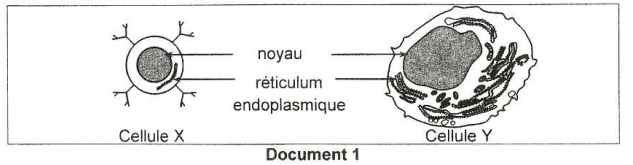
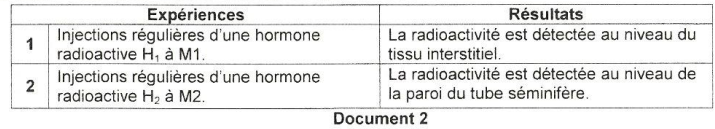
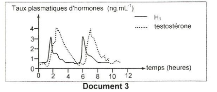
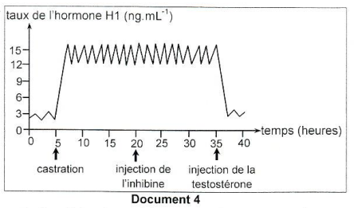
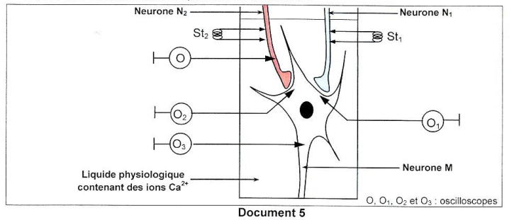
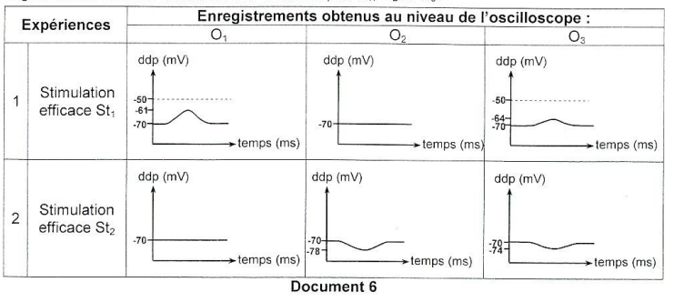
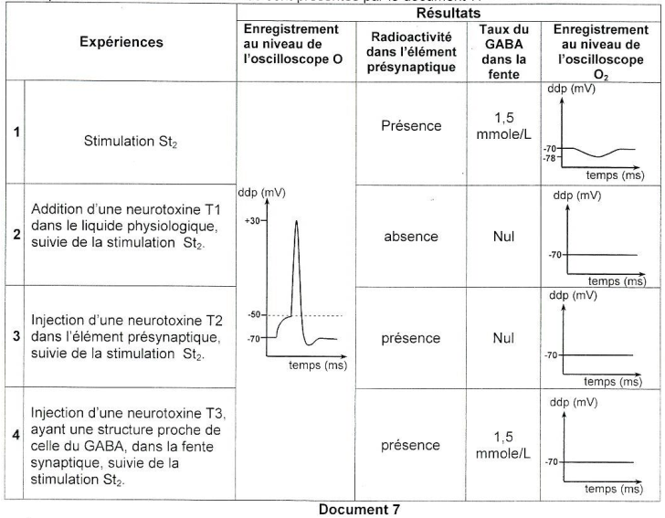

Sciences de la Vie
et de la Terre
Session de contrôle 2021 — Épreuve officielle simulée
Clique sur chaque verbe pour comprendre ce qu'attend le correcteur.
⚠️ Décrire sans interpréter = 0 pt.
⚠️ Nommer sans expliquer = incomplet.
⚠️ Affirmer sans justifier = non recevable.
⚠️ Rédiger un paragraphe entier = perte de temps.
⚠️ Ignorer les documents = hors sujet.
⚠️ Pas de légende = 0 pt.
Ce que tu dois savoir
Notions ciblées pour cette épreuve uniquement
Réponse immunitaire à médiation humorale (RIMH) : Cette réponse fait intervenir les lymphocytes B (LB) qui maturent dans la moelle osseuse. Lorsque les LB reconnaissent un antigène (via leurs immunoglobulines de surface), ils se différencient en plasmocytes qui sécrètent des anticorps. Les anticorps neutralisent les antigènes et facilitent leur élimination (opsonisation).
الاستجابة المناعية الخلطية تشارك فيها الخلايا الليمفاوية B (LB) التي تنضج في نخاع العظم، وتفرز أجساماً مضادة تعادل المستضدات.
Régulation de la fonction endocrine testiculaire : L'hypothalamus sécrète la GnRH qui stimule l'hypophyse antérieure à sécréter LH et FSH. LH agit sur les cellules de Leydig pour la sécrétion de testostérone. FSH agit sur les cellules de Sertoli pour la spermatogenèse et la sécrétion d'inhibine. La testostérone et l'inhibine exercent un rétrocontrôle négatif sur l'hypothalamus et l'hypophyse.
ينظم محور تحت المهاد-الغدة النخامية-الخصية الوظيفة التناسلية الذكرية عبر هرمونات GnRH و LH و FSH، التي تحفز إنتاج التستوستيرون والإنهيبين، مع وجود تغذية راجعة سلبية.
Transmission synaptique : Au niveau d'une synapse, le potentiel d'action (PA) qui arrive dans l'élément présynaptique déclenche l'entrée d'ions Ca²⁺ via des canaux voltage-dépendants. Cette entrée provoque l'exocytose du neurotransmetteur dans la fente synaptique. Le neurotransmetteur se fixe sur des récepteurs spécifiques de la membrane postsynaptique, ce qui entraîne l'ouverture de canaux chimio-dépendants.
PPSE / PPSI : Si les canaux ouverts laissent entrer des ions Na⁺, on a une dépolarisation : c'est un PPSE (potentiel postsynaptique excitateur). Si les canaux ouverts laissent entrer des ions Cl⁻ ou sortir des ions K⁺, on a une hyperpolarisation : c'est un PPSI (potentiel postsynaptique inhibiteur).
Sommation et intégration : Le neurone postsynaptique intègre les PPSE et PPSI par sommation spatiale (plusieurs synapses) et sommation temporelle (plusieurs PA successifs). Si la somme des dépolarisations atteint le seuil, un PA est déclenché.
يعمل الناقل العصبي على إزالة الاستقطاب (PPSE) أو فرط الاستقطاب (PPSI) في الغشاء بعد المشبكي. تقوم الخلية العصبية بدمج هذه الإشارات عبر الجمع المكاني والزماني لتوليد جهد عمل.
Ministère de l'Éducation
EXAMEN DU BACCALAURÉAT
Pour chacun des items suivants (de 1 à 8), il peut y avoir une (ou deux) réponse(s) correcte(s). Reportez sur votre copie le numéro de chaque item et indiquez dans chaque cas la (ou les deux) lettre(s) correspondant à la (ou aux deux) réponse(s) correcte(s).
NB : toute réponse fausse annule la note attribuée à l'item.

doc1-immunite.png

doc2-mammiferes.png

doc3-courbes.png

doc4-castration.png

doc5-montage.png

doc6-enregistrements.png
a- déduisez la nature des synapses N1 - M et N2 - M,
b- dégagez une propriété commune des potentiels enregistrés,
c- déterminez, en justifiant votre réponse, le nombre minimal de stimulations efficaces mobilisant les deux synapses N1 - M et N2 - M pour obtenir un potentiel d'action au niveau de l'oscilloscope O3.

doc7-neurotoxines.png
a- expliquez les résultats obtenus et dégagez l'effet de chacune des neurotoxines T1, T2 et T3,
b- expliquez le mécanisme du fonctionnement de la synapse N2 - M.
Pour chacun des items suivants (de 1 à 8), il peut y avoir une (ou deux) réponse(s) correcte(s). Reportez sur votre copie le numéro de chaque item et indiquez dans chaque cas la (ou les deux) lettre(s) correspondant à la (ou aux deux) réponse(s) correcte(s).
NB : toute réponse fausse annule la note attribuée à l'item.